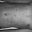

{% block content %}

<style>
  /* Full-screen background with a subtle gradient overlay */
  body::before {
    background: url("https://www.verywellhealth.com/thmb/NP8obOtrQctIFWYJaOz5yM3ph44=/1500x0/filters:no_upscale():max_bytes(150000):strip_icc()/VWHealth-Can-Skin-Cancer-Be-the-Same-Color-as-Your-Skin-1-1a0aebf878ba45ae98837a1cc6e00d1a.jpg") no-repeat center center fixed, rgba(0, 0, 0, 0.5);
    background-size: cover;
    content: '';
    z-index: -1;
    width: 100%;
    height: 100%;
    position: absolute;
  }

  /* Main container styles */
  .container {
    background-color: rgba(255, 255, 255, 0.85);
    border-radius: 15px;
    padding: 40px;
    margin-top: 50px;
    box-shadow: 0px 4px 20px rgba(0, 0, 0, 0.2);
    max-width: 800px;
    margin-left: auto;
    margin-right: auto;
  }

  h2 {
    font-family: 'Roboto', sans-serif;
    font-weight: 700;
    color: #343a40;
    font-size: 2.5rem;
    text-align: center;
  }

  form {
    background-color: #f8f9fa;
    padding: 30px;
    border-radius: 15px;
    box-shadow: 0px 4px 20px rgba(0, 0, 0, 0.15);
  }

  input[type="file"] {
    font-size: 1.2rem;
    padding: 12px;
    border-radius: 10px;
    border: 1px solid #ccc;
    width: 80%;
    display: block;
    margin: 15px auto;
    transition: border 0.3s ease;
  }

  input[type="file"]:focus {
    border: 2px solid #28a745;
    outline: none;
  }

  button {
    background-color: #28a745;
    color: white;
    font-size: 1.2rem;
    padding: 12px 40px;
    border: none;
    border-radius: 10px;
    width: 100%;
    cursor: pointer;
    transition: background-color 0.3s ease, transform 0.2s ease;
  }

  button:hover {
    background-color: #218838;
    transform: scale(1.05);
  }

  /* Uploaded image section */
  .uploaded-image-container {
    display: flex;
    flex-wrap: wrap;
    justify-content: center;
    gap: 20px;
    margin-top: 30px;
  }

  .uploaded-image-container img {
    border-radius: 10px;
    box-shadow: 0px 4px 15px rgba(0, 0, 0, 0.1);
    transition: transform 0.3s ease, box-shadow 0.3s ease;
  }

  .uploaded-image-container img:hover {
    transform: scale(1.05);
    box-shadow: 0px 6px 20px rgba(0, 0, 0, 0.2);
  }

  /* No image message */
  p {
    font-size: 1.5rem;
    color: #dc3545;
    text-align: center;
  }

  /* Responsive design */
  @media (max-width: 768px) {
    .container {
      padding: 20px;
      margin-top: 20px;
    }

    input[type="file"] {
      width: 100%;
    }

    button {
      padding: 10px 20px;
    }

    h2 {
      font-size: 2rem;
    }
  }
</style>

<body>
  <br>
<div class="container">
  <!-- Form Title -->
  <h2 class="my-4">Skin Disease Detection</h2>

  <!-- File Upload Form -->
 
  <form method="post" enctype="multipart/form-data">
    {% csrf_token %}
    <input type="file" name="upload" accept="image/*" id="imageUpload">
    <button type="submit">Submit</button>
  </form>

  <!-- Uploaded Image Section -->
  <h2 class="my-4" style="font-size: 1.5rem; color: #ff4b5c;">
    Uploaded Image
  </h2>

  <div class="uploaded-image-container">
    {% if file_url %}
      
      
      
      <a class="btn btn-dark my-4" href="/">Return to Homepage</a>
    {% else %}
      <p>No Image Selected.</p>
    {% endif %}
  </div>

</div>

<script>
  // Optional JS for file input and hover effect
  const fileInput = document.getElementById('imageUpload');
  fileInput.addEventListener('change', function() {
    if (this.files && this.files[0]) {
      const fileName = this.files[0].name;
      console.log('File selected:', fileName);
      // Optionally show file name or do additional processing
    }
  });
</script>

</body>

{% endblock %}
